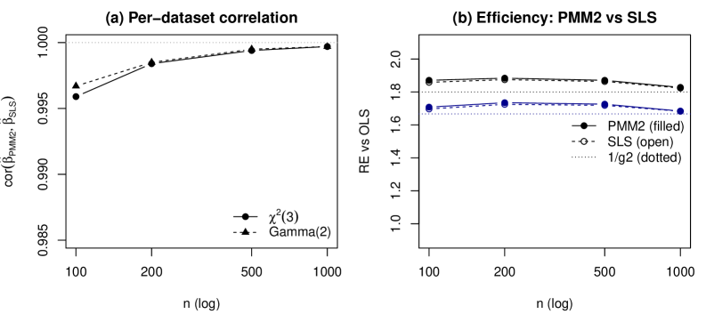
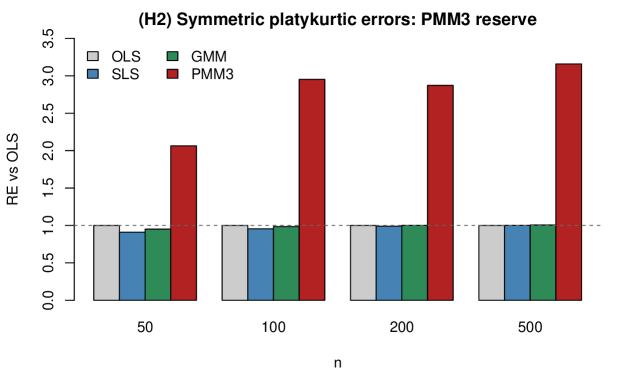

Algebraic identities behind the SLS–PMM equivalence and efficiency formulas are checked with Lean 4 proofs released in the code supplement.
Abstract
For linear regression with i.i.d. homoskedastic errors, optimally weighted second-order least squares (SLS) is the degree-two polynomial maximization method (PMM) estimating equation: both select the same optimal combination of $e$ and $e^2-σ^2$, share one influence function, and attain the slope variance $c_2g_2/N$. The identity is one of estimating equations and stops where the optimal combination depends on the design. Within the polynomial moment class, degree three holds an efficiency reserve: on four right-skewed laws the cubic direction adds between $30\%$ and $50\%$ asymptotic efficiency, and under symmetric platykurtic errors it is the only informative direction. The reserve belongs to the degree-three span, which an efficient generalized method of moments estimator also attains. We give the asymptotic law of the feasible plug-in estimator, a rule for choosing the degree, Lean 4 checks of the algebra, and simulation evidence.
Problem
Second-order least squares (SLS) and the polynomial maximization method (PMM) are two semiparametric regression estimators that exploit higher-order residual moments. Their relationship had not been established, and neither had the efficiency available beyond degree-two moments.
Approach
The paper shows at the population level that optimally weighted SLS and degree-two PMM pick the same optimal combination of e and e^2−σ^2. They share one influence function and the slope variance c2·g2/N. Closed-form degree-three variance-reduction coefficients quantify an efficiency reserve. The algebra is checked in Lean 4, and Monte Carlo studies using R and the EstemPMM package compare OLS, PMM2, PMM3, SLS and GMM.
Results
On right-skewed laws the cubic direction adds 30–50% asymptotic efficiency. Under symmetric platykurtic (uniform) errors, SLS and GMM reduce to OLS while PMM3 attains relative efficiency up to 3.16. Under asymmetric errors, the PMM2–SLS per-dataset correlation rises to 0.9997 at n=1000.

Figure 1: PMM2 and SLS become empirically indistinguishable as n grows under asymmetric errors (H1). (a) Per-replication correlation \widehat{\rho}(\hat{\beta}_{1}^{\mathrm{PMM2}},\hat{\beta}_{1}^{\mathrm{SLS}}) rises toward unity in n . (b) Realized slope efficiencies of PMM2 (filled) and SLS (open) coincide across n for \chi^{2}(3) and \mathrm{Gamma}(2,1) errors; dotted lines mark the location r

Figure 2: PMM3 captures a degree-3 efficiency reserve that SLS and GMM miss under symmetric platykurtic errors (H2). On symmetric platykurtic (Uniform) errors SLS and GMM coincide with OLS ( \mathrm{RE}\approx 1 ), while PMM3 attains \mathrm{RE} up to 3.16 — a regime SLS cannot reach because the information lives in the e^{3} moment its residual vector omits.